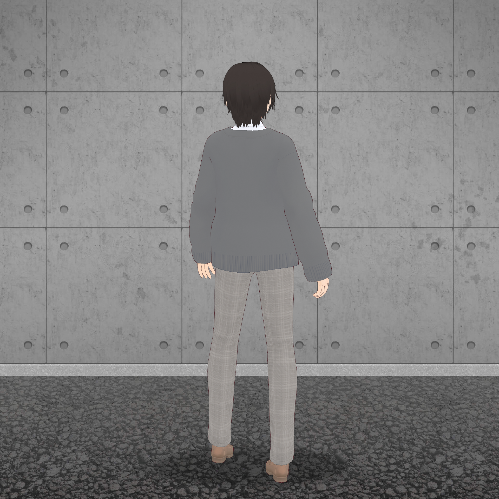
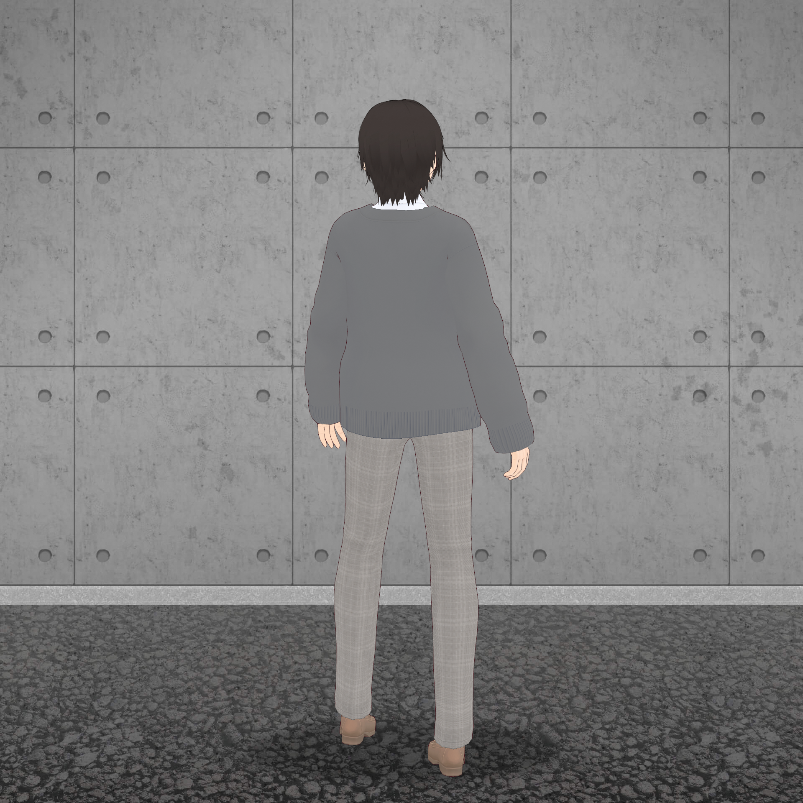

※表示金額は税込です。
3Dモデルのダウンロード商品です。
こちらは22-23W/S collection[Quantum foam]のイメージに合わせて制作した新色のveryperiです。
-
chlomaのリアルウェア『Shelter Coat』を3Dアバターのためのウェアとして再構築。主にソーシャルVR VRChat での使用を想定しています。
MODEL CONVERTED BY ONIGASHIMA.
『Shelter Coat』
すべての脅威から人を守る「シェルター」の名を冠したコート。
強く丸みを帯びた袖のシルエットと、大きく作られた着脱可能なフード、綿が入りぷっくりとした表情のディテールが特徴的。
保温性と軽さに非常に優れ、着用者を優しく守ります。
-
各データや導入の詳細については以下のドキュメントを参照してください。
[chloma_ShelterCoat_Document.pdf]
▶スペック
・ポリゴン数 30,628(三角面)
・スキニング済
・フードを被った状態、フードを取り外した状態の差分を同梱
・各所に設定されたブレンドシェイプによって、好みのバランスに調節可能
・揺れ物セットアップ済
▶データ内容
・UnityPackage
・Texture(Png)
・Mesh(Fbx)
・Blendファイル
▶試着について
VRChat内に設置されている「chloma Virtual Store in GHOSTCLUB」にて試着することができます。週末不定期に開場。
最新情報ははchloma公式のtwitterアカウントにて。
▶注意点
・UnityPackageを読み込む際は、プロジェクトに予めVRCSDK及びlilToon shaderをインポートしてください。
・キャラクター及びコーディネートで使用している衣服の3Dモデルは付属いたしません。
・ご利用のためには専門的な知識が必要となります。ご利用環境を導入するためのサポート等はいたしかねますのでご了承ください。
▶利用規約
本モデルを購入/利用されるすべてのお客様は、以下の利用規約を読了及び同意したものと致します。
chloma3Dモデル利用規約
Credit
wear design: chloma
modeling (Shelter Coat): ONIGASHIMA
modeling (Other Clothes): chloma
avatar making: Hikari Naginami (wa-i)
 
